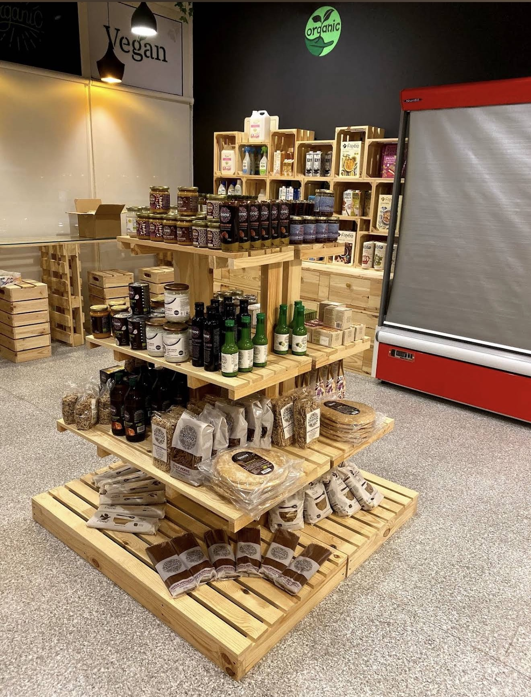

No shortcuts, no additives, no mystery ingredients — just organic produce, pantry staples, and everyday essentials, stacked on reclaimed pine crates the way they were meant to be sold.

Certified organic sourcing across every crate on our floor.
Ourganic Store started with a simple idea: strip the supermarket down to what actually matters. Every shelf here is hand-built from reclaimed pine — no glossy end-caps, no fluorescent overload — just honest wood holding honest food.
From cold-pressed oils and stone-ground grains to plant milks and cleaning essentials, we work directly with small organic producers so what reaches your basket is exactly what left the farm.
Our floor is organized the way it looks on our shelves — stacked by crate, not by aisle number. Here's what's inside each one.
Stone-ground flours, whole grains, legumes and rice, bagged fresh from organic mills.
Cold-pressed olive oil, honey, jams and preserves from small-batch organic kitchens.
Oat, almond and coconut drinks alongside sprouted oats and organic cornflakes.
Plant-based detergents, surface sprays and refill-friendly household essentials.
Whole-wheat pasta, flatbreads and spelt goods, packed without preservatives.
Cold-pressed juices made to order at our in-store "Juice & Joy" counter.
Peanut and almond butters, dried fruit and seeds for honest everyday snacking.
Compostable capsules and loose leaf blends sourced from organic estates.
Every display in the store is built from reclaimed pallet wood — a small nod to the same principle behind what's on the shelves.
Find us on Google Maps — tap below for turn-by-turn directions to the store.
Open daily, 10:00 AM – 10:00 PM
Cold-pressed juices made at the counter, every day the store is open.